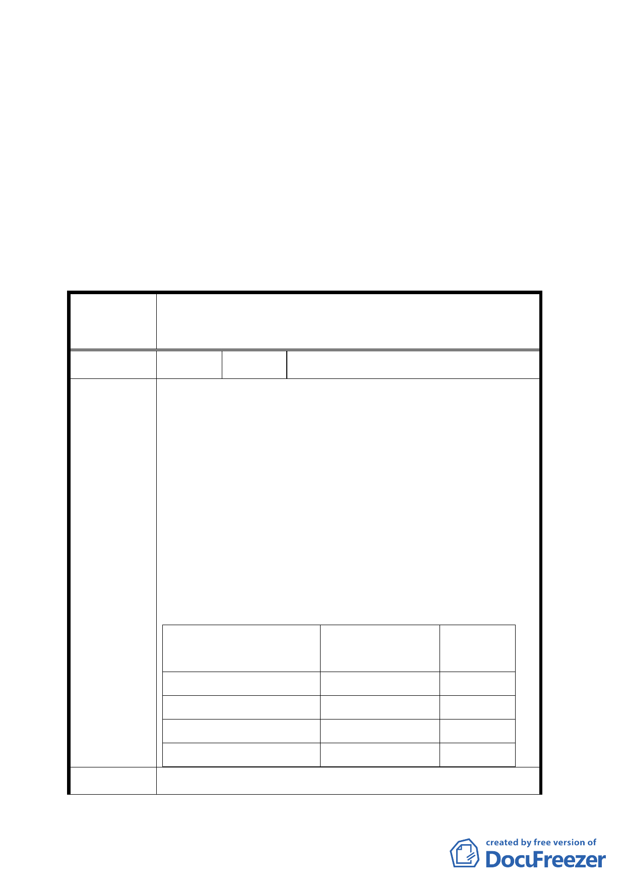

五、現市府檢送本案申請人同意該 11 筆地號土地排除於本案申請劃定範
圍之切結書到會，擬請提會續審。
決議：
一、本案依修正後更新單元劃定範圍通過（為木柵段三小段 124 等 37 筆
土地，面積 4615 平方公尺）。
二、公民或團體陳情意見決議如後附綜理表。
臺北市都市計畫委員會 公民或團體陳情意見綜理表
案名
劃定「臺北市文山區木柵段三小段 124 地號等 48 筆土地
為更新單元」都市更新計畫案
編號
1 陳情人 陳欽賜
1.有關文山區木柵段三小段 124 地號等 48 筆土地，前經
申請更新單元劃定，惟其中本人名下所有之 165、167、
177、178、186、191、192、199、199-1、200、200-1、
200-2、200-3、200-4、200-5、204、205、206、210 地
號共 19 筆土地（199-1 及 200-5 為國有地），業已完成整
合開發興建房屋，目前已申請建照並進行規劃中，已無
繼續列入更新單元範圍之必要及價值。
陳情理由 2.上開合建案基地面積 2412 平方公尺，除 5 平方公尺之
國有土地外，其餘 2407 平方公尺土地已申請建照。
面積
百分比
（平方公尺）
（％）
已整合過戶本人
2365
98.05
已簽約辦理過戶中
42 1.74
國有土地承租承購中
5 0.21
合計基地面積
2412
100.00
建議辦法 本人名下所有座落臺北市文山區木柵段三小段 165 地號
7